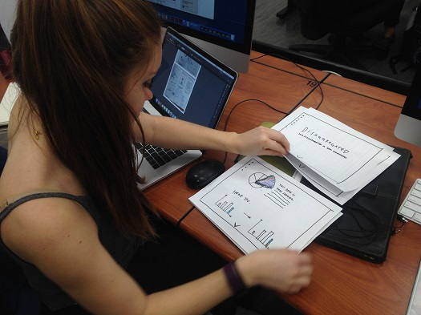
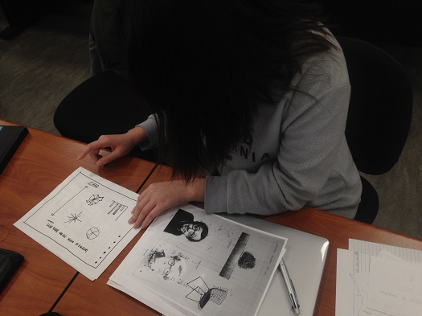

In doing my paper prototype, I was able to learn how people would behave while using my project. For this stage and this prototype, I continued with testing the 'narrative' format of my project, where the user would follow the interface by scrolling down and then at the end, would be able to have the autonomy to explore the different datasets. In doing my first prototype, I found that the user would scroll through and simply read everything first, and only started interacting with the interface at the end, when it encourages the user to click the different datasets. For my second paper prototype, I wanted to test if users would be more receptive to having more information upon interacting by having another window open upon clicking a dataset, explaining that dataset. From this test, there was some confusion, and I was asked if it was supposed to be a window that opened after clicking. Moving forward with the project, I'll continue to explore more user-friendly ways to convey information, both in terms of datasets as well as the information contextualizing said datasets).